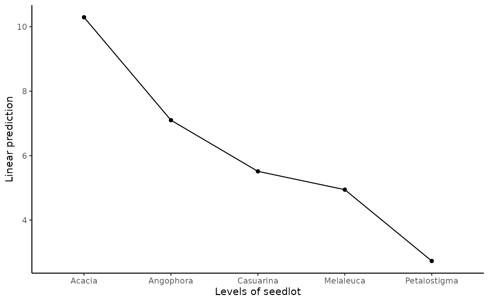

R/Exam3.1.1.R
Exam3.1.1.RdExam3.1.1 is part of data from Australian Centre for Agricultural Research (ACIAR) in Queensland, Australia (Experiment 309).
E.R. Williams, C.E. Harwood and A.C. Matheson (2023). Experimental Design and Analysis for Tree Improvement. CSIRO Publishing (https://www.publish.csiro.au/book/3145/).
library(car)
library(dae)
library(dplyr)
library(emmeans)
library(ggplot2)
library(lmerTest)
library(magrittr)
library(predictmeans)
library(supernova)
data(DataExam3.1.1)
# Pg. 36
fm3.8 <- lm(formula = Mean ~ Repl + SeedLot, data = DataExam3.1.1)
# Pg. 40
anova(fm3.8)
#> Analysis of Variance Table
#>
#> Response: Mean
#> Df Sum Sq Mean Sq F value Pr(>F)
#> Repl 1 2.538 2.5376 3.4197 0.138108
#> SeedLot 4 63.234 15.8084 21.3035 0.005851 **
#> Residuals 4 2.968 0.7421
#> ---
#> Signif. codes: 0 '***' 0.001 '**' 0.01 '*' 0.05 '.' 0.1 ' ' 1
# Pg. 40
emmeans(object = fm3.8, specs = ~ SeedLot)
#> SeedLot emmean SE df lower.CL upper.CL
#> Acacia 10.29 0.609 4 8.60 11.98
#> Angophora 7.10 0.609 4 5.41 8.79
#> Casuarina 5.51 0.609 4 3.82 7.20
#> Melaleuca 4.94 0.609 4 3.25 6.63
#> Petalostigma 2.73 0.609 4 1.04 4.42
#>
#> Results are averaged over the levels of: Repl
#> Confidence level used: 0.95
emmip(object = fm3.8, formula = ~ SeedLot) +
theme_classic()
